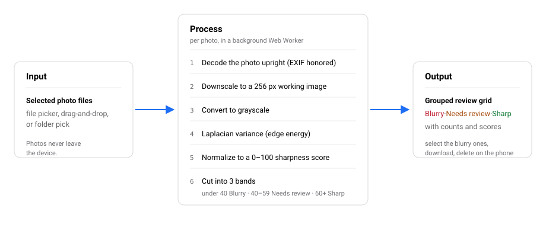
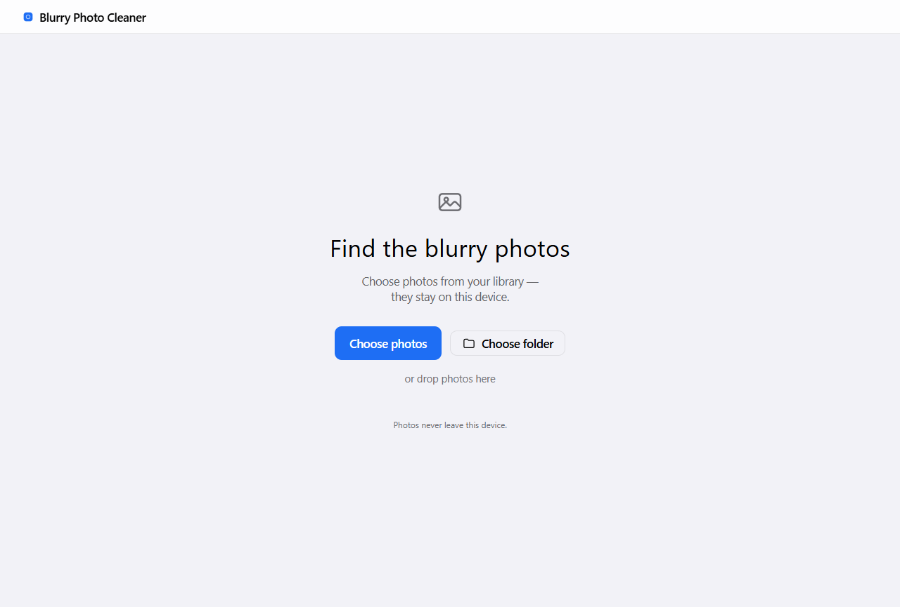
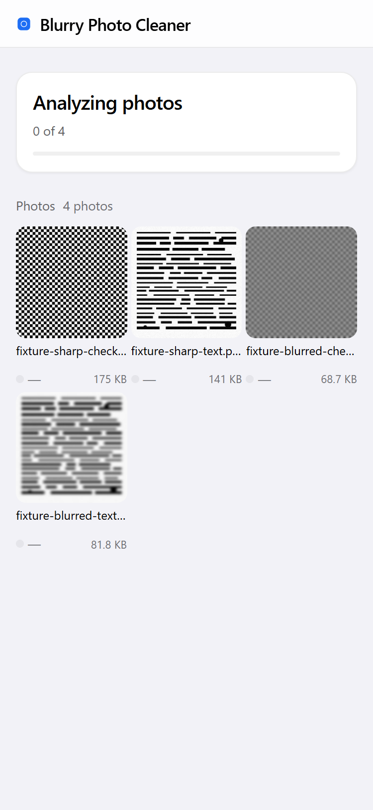
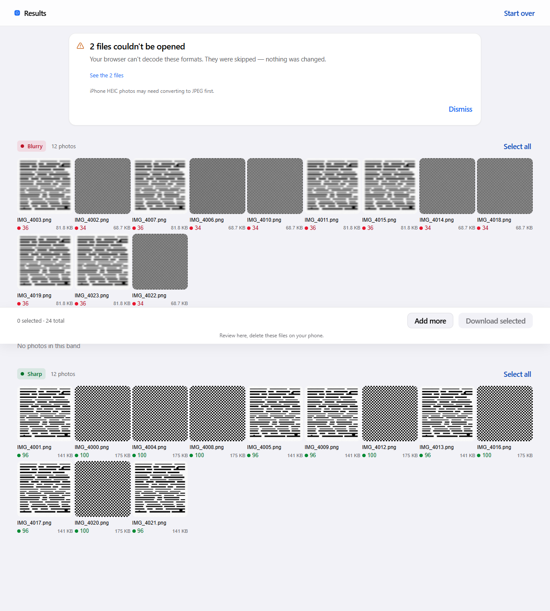
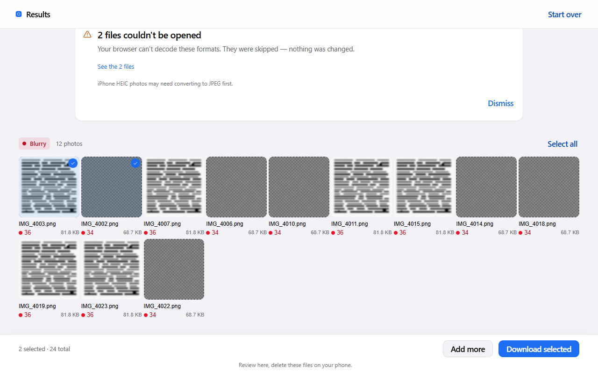
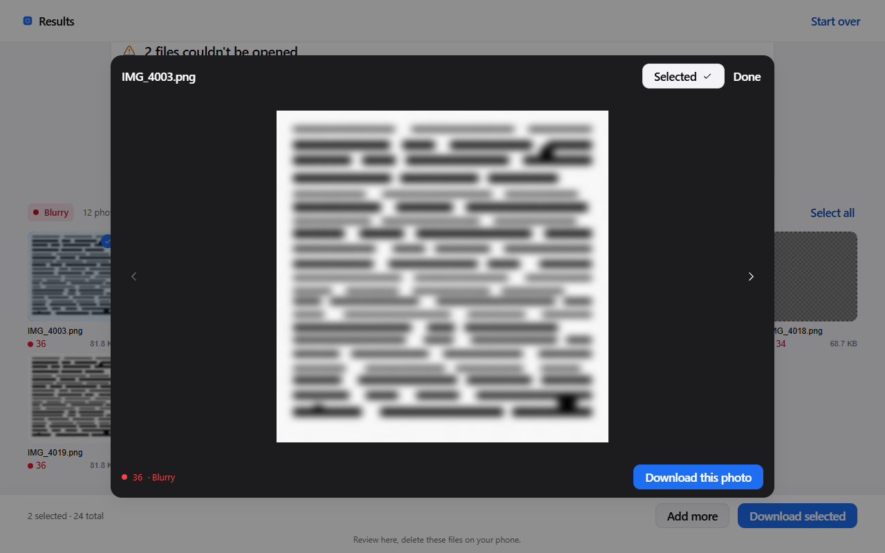

Multimedia Final Project · Documentation Report
Blurry Photo Cleaner
A browser tool that finds the blurry photos in your library, so they can be removed and storage freed up.
| Project name | Blurry Photo Cleaner |
|---|---|
| Your name | [Your name] |
| Course | Multimedia |
| Date | November 5, 2026 |
The report has five parts: title page, introduction, how it works, testing, and conclusion.
2. Introduction
Blurry Photo Cleaner helps phone users to find and remove blurry photos to free up storage every day.
- Problem
- Phone galleries fill up with out-of-focus shots, and finding them means scrolling through hundreds of thumbnails and judging each one by eye — slow, tiring, and inconsistent.
- Who it helps
- Anyone who takes photos on a phone and wants to keep the sharp ones without paying for extra storage.
- Goal
- The app scores every selected photo for sharpness in the browser, groups the results into Blurry, Needs review, and Sharp, and lets the user download the blurry ones so they can be deleted on the phone.
3. How It Works
The app is a single web page that runs entirely in the browser — there is no server and no account. Photos are chosen, scored, and reviewed on the device.
| Input (what goes in) | Process (what happens inside) | Output (what comes out) |
|---|---|---|
| Selected photo files — picked with the file picker, dragged onto the page, or chosen from a folder (when the browser supports it). The files stay on the device. | Each photo is analyzed in a background Web Worker: decode upright, downscale to a 256-pixel working image, convert to grayscale, measure Laplacian variance (edge energy), and normalize the result to a 0–100 sharpness score. The score is cut into three bands: under 40 Blurry, 40–59 Needs review, 60+ Sharp. | A review grid grouped into the three bands, with counts and a score chip on every tile. The user selects photos, downloads the selected originals, and deletes those files in the phone’s gallery app. |

The screens





4. Testing
Tests 1–4 check the features of the app. Test 5 compares it with the old manual way of doing the same task. Everything was run against the finished app in automated browser sessions; the source of every measured number is listed under the table.
| Test | What you tried | Expected result | Actual result | Pass or Fail |
|---|---|---|---|---|
| Test 1 Upload |
Picked 1 photo, then 24 photos at once; added a plain .txt file and a fake .heic photo; dragged 2 files onto the page. | Every photo appears as a thumbnail with its name and size; invalid files are counted in a visible notice and never dropped silently. | All 24 thumbnails rendered with the count “24 photos”; the single photo showed its size (141 KB); the .txt gave “1 file couldn’t be opened” with the name listed; the .heic showed the same notice plus a convert-to-JPEG hint; the drag-drop added 2 photos. | Pass |
| Test 2 Blur detection |
Scored 2 sharp test patterns and 2 deliberately blurred copies of the same patterns; re-ran the same 4 files a second time. | Sharp patterns score high and land in Sharp; blurred copies score low and land in Blurry; the same file always gets the same score. | Sharp checkerboard 100 → Sharp, sharp text 96 → Sharp, blurred checkerboard 34 → Blurry, blurred text 36 → Blurry; every re-run gave identical scores and bands. | Pass |
| Test 3 Grouping and review |
Analyzed batches of 4 and 24 photos and reviewed the grid: band order, counts, Select all, tapping tiles to select. | Photos are grouped Blurry → Needs review → Sharp with counts matching the tiles; selecting updates the count in the action bar. | Bands rendered in that order with counts equal to the tiles (4-photo batch: 2 Blurry, 0 Needs review, 2 Sharp; 24-photo batch: 12 and 12, Figure 4); the empty middle band showed “No photos in this band”; the summary read “2 selected · 24 total” and survived scrolling and re-rendering. | Pass |
| Test 4 Download |
Selected 2 photos and pressed Download selected; also pressed it with nothing selected. | Each selected photo is saved as the original file; with 0 selected the button is disabled. | 2 files saved byte-identical to the originals, one after another 344 ms apart; the button was disabled at 0 selected; the app announced “Preparing 2 photos” and then “Saved 2 photos”. | Pass |
| Test 5 Comparison |
Same task done with the app and with the manual way — scrolling the phone’s gallery and judging each photo by eye. | The app is faster, takes fewer steps, and makes fewer mistakes than judging photos by eye. | App (measured): 20 photos analyzed in 2.6 s while the page stayed responsive; a full run — load 24 photos, review the groups, select 2, download — completed in well under a minute, most of it spent loading the files into the test browser. Steps: choose photos → review the grouped grid → tap the blurry ones → Download selected. Manual way (estimate, not measured): scrolling and eyeballing 24 photos takes roughly 3–5 minutes, with dozens of scroll-and-judge steps and no score to check the judgment against, so mistakes are likely — and a borderline photo is easy to misjudge. The app keeps borderline photos in Needs review instead of guessing for the user. | Pass |
Sources for the measured numbers (automated end-to-end runs in this repository): Test 1 — e2e/artifacts/phase6-e2e-tester/reg-phase2-run.log; Test 2 — reg-phase3-run.log; Test 3 — reg-phase4-run.log plus the 24-photo final run (e2e/artifacts/phase6-polish/final/, Figure 4); Test 4 — reg-phase4-run.log, byte-identity re-verified by checksum in e2e/artifacts/phase5-security-findings.md; Test 5 (app side) — reg-phase3-run.log (20-photo analysis window 2.61 s; 14.36 s wall time including loading the files into the test browser) and run.log (full mobile flow). The manual-way time is an estimate, not a measurement. The app itself does not delete photos: it saves the blurry ones so they can be deleted in the gallery app.
5. Conclusion
- What works: uploading 1 to 24+ photos with invalid files counted in a notice instead of dropped silently; sharpness scoring in a background worker that kept the page responsive (20 photos in 2.6 s); the three-band grouping with a score on every tile; downloads that save the original files byte-identical; and the privacy promise — photos never leave the device, verified by running the whole flow with all outside network requests blocked.
- What does not work: the app cannot delete photos from the phone — the user downloads the blurry ones and deletes those files in the gallery app themselves. iPhone HEIC photos may need converting to JPEG first, because some browsers cannot decode them. And a single sharpness metric can flag sharp-but-low-texture photos (a sky, a plain wall) as blurry — the Needs review band catches the borderline cases so the user decides, but those photos still need a human eye.
- What I would improve: export all selected photos as one ZIP file instead of one download at a time; add adjustable thresholds for advanced users; and make the app installable and fully offline as a PWA.